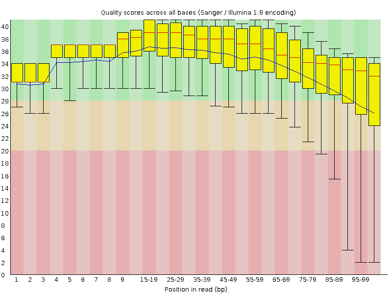
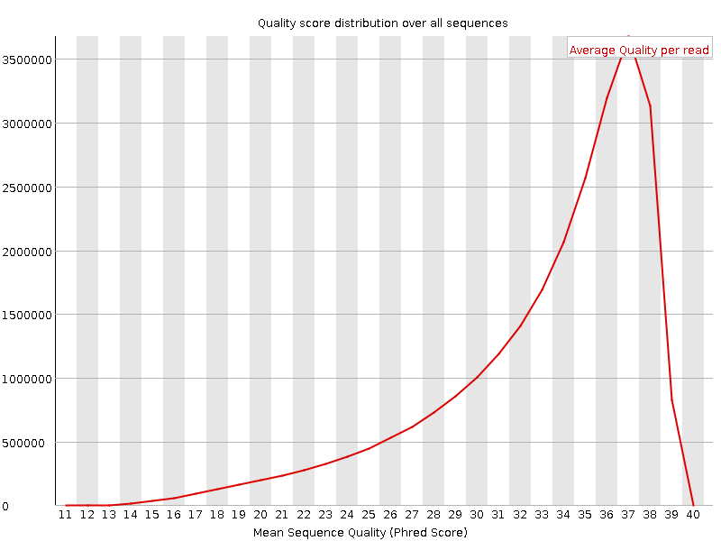
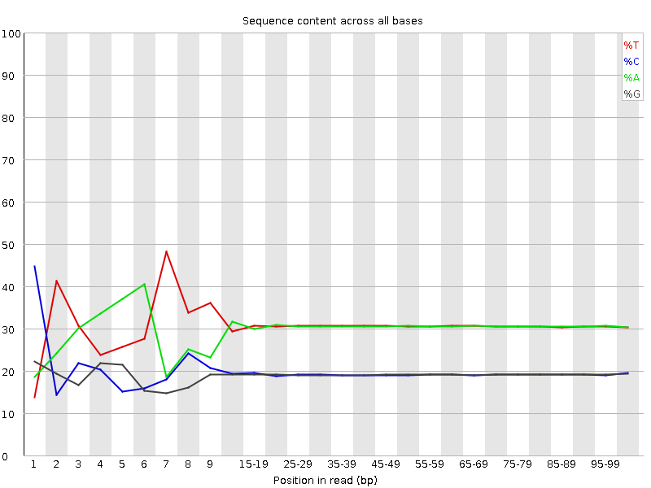
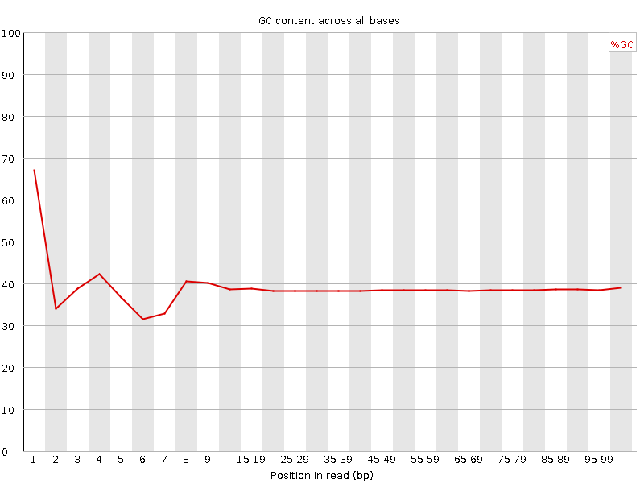
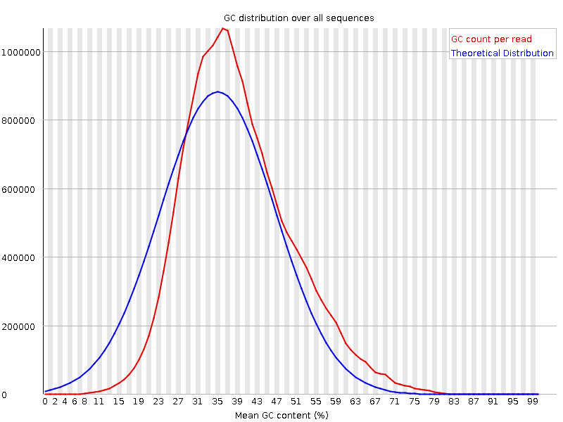
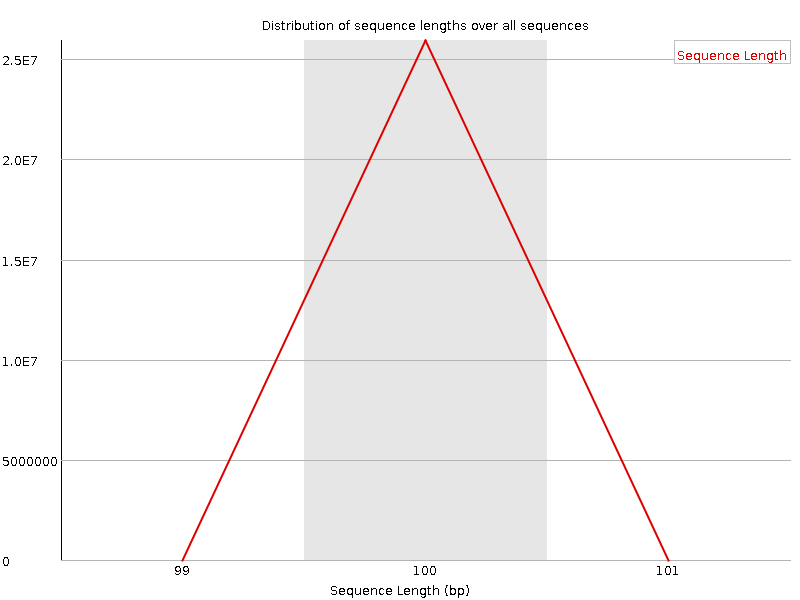
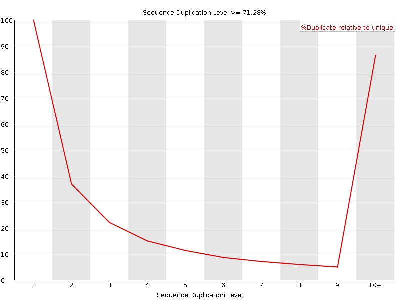
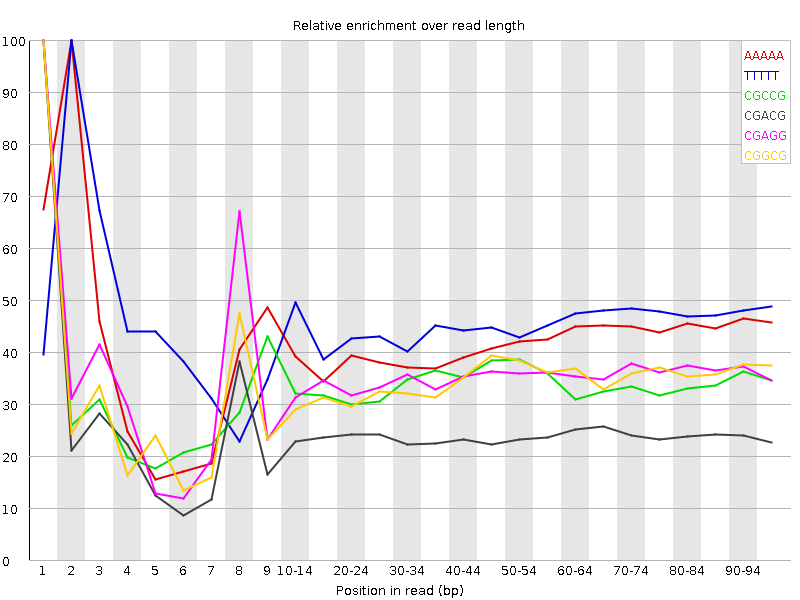

![[OK]](Icons/tick.png) Basic Statistics
Basic Statistics
| Measure | Value |
|---|---|
| Filename | c2.2.fq |
| File type | Conventional base calls |
| Encoding | Sanger / Illumina 1.9 |
| Total Sequences | 25931890 |
| Filtered Sequences | 0 |
| Sequence length | 100 |
| %GC | 38 |
Per base sequence quality

Per sequence quality scores

![[FAIL]](Icons/error.png) Per base sequence content
Per base sequence content

Per base GC content

![[WARN]](Icons/warning.png) Per sequence GC content
Per sequence GC content

Per base N content

Sequence Length Distribution

Sequence Duplication Levels

Overrepresented sequences
No overrepresented sequences
Kmer Content

| Sequence | Count | Obs/Exp Overall | Obs/Exp Max | Max Obs/Exp Position |
|---|---|---|---|---|
| AAAAA | 16021990 | 2.4361053 | 5.8326902 | 2 |
| TTTTT | 16261110 | 2.3771708 | 5.204626 | 2 |
| CGCCG | 1387175 | 2.028719 | 5.963299 | 1 |
| CGACG | 2118165 | 1.9810438 | 8.174615 | 1 |
| CGAGG | 2088160 | 1.9809 | 5.578468 | 1 |
| CGGCG | 1268695 | 1.8819687 | 5.446485 | 1 |
| CTTCT | 4965875 | 1.8032111 | 5.1376076 | 1 |
| CGCGG | 1185815 | 1.7590255 | 6.1015234 | 1 |
| TCGAG | 2814315 | 1.6700777 | 5.108751 | 7 |
| CTCGA | 2833395 | 1.6577023 | 8.562873 | 1 |
| CGCGA | 1762525 | 1.6484262 | 6.2928867 | 1 |
| CTTCC | 2801300 | 1.603174 | 5.170321 | 1 |
| CGAGA | 2655900 | 1.5885085 | 5.477094 | 1 |
| CTGGA | 2625380 | 1.5579593 | 6.5829105 | 1 |
| ATCGA | 4121660 | 1.5421095 | 5.570676 | 6 |
| CTTTT | 6678895 | 1.5388104 | 6.2430625 | 1 |
| CGATC | 2628010 | 1.53754 | 5.3941455 | 4 |
| CGCCA | 1664315 | 1.5346354 | 5.837514 | 1 |
| CTCCA | 2642395 | 1.5241673 | 6.7051463 | 1 |
| CAAAA | 6374380 | 1.5155627 | 5.036763 | 1 |
| CTTCG | 2562515 | 1.4874829 | 6.534002 | 1 |
| CGAAG | 2472545 | 1.4788429 | 5.391077 | 1 |
| CTCGT | 2491265 | 1.4461237 | 7.316434 | 1 |
| CCGGC | 977635 | 1.4297742 | 5.2419724 | 1 |
| CTCGC | 1556435 | 1.4239241 | 6.5044136 | 1 |
| CTCGG | 1484620 | 1.3776398 | 8.278543 | 1 |
| CTGGC | 1476465 | 1.3700724 | 5.078366 | 1 |
| CTTCA | 3708945 | 1.3574224 | 5.340118 | 1 |
| CGAAA | 3508595 | 1.3230922 | 5.71303 | 1 |
| GAATC | 3397095 | 1.271015 | 5.375997 | 4 |
| CTTGG | 2107460 | 1.240822 | 6.0312715 | 1 |
| AATCG | 3275420 | 1.2254907 | 5.031002 | 5 |
| CTTTG | 3308815 | 1.2186748 | 5.1771026 | 1 |
| CTTGA | 3268690 | 1.2133968 | 5.3146996 | 1 |